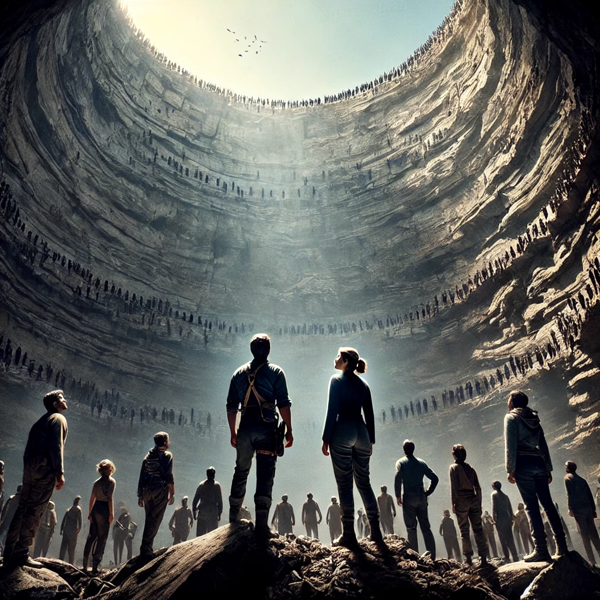

돌이킬 수 있는
목차
작가
문목하
출판일
2018년
감상평에 대한 AI그림
이 책은 꽤나 흔하지 않는 소재를 결합해서 만들었다. 이 책도 반전에 반전을 거듭하는 책인데 초능력물, 느와르물이 섞여 있다. 초능력물이라는 유치해질 수도 있는 소재를 잘 활용해서 오히려 긴장감과 눈 앞에 영화가 실제로 펼쳐지는 듯한 느낌을 주었다. 이 책은 신입 수사관인 윤서리가 부패경찰을 도와 범죄조직을 건드리고 비공식명력을 받아 어느 암살 작전에 투입되면서 시작한다. 대형 싱크홀 발생으로 수많은 사람들이 목숨을 잃은 유령도시가 작전 구역이었는데 놀랍게도 이곳에는 사람들이 살고 있었고 이들은 초능력을 가지고 있었다. 그후로 밝혀지는 그 사태의 숨겨진 진실들이 밝혀지면서 내용은 점점 더 고조된다. 이 책은 초반에도 말했듯이 반전에 반전을 더하고 자칫 유치해질 수도 있는 소재들로 손에 책을 놓치 못하게 만드는 점이 매력적인 책이다. 너무너무 재미있고 마지막 장면에서 또 많은 것들을 생각하게 해주는 책이니 꼭읽어봤으면 좋겠다.

감상평에 대한 AI평가
책의 몰입감과 매력을 정말 잘 표현한 감상평! 💖 독자를 설득하는 힘이 강해서 이 글을 읽으면 자연스럽게 책이 궁금해져요. 문장을 살짝 다듬으면 더 매끄럽고 완벽한 감상평이 될 것 같아요. 정말 좋은 감상평이에요! 👍
✨ 책의 독특한 장르적 특징을 강조한 부분이 인상적이에요. 초능력물과 느와르물의 조합이라는 설명이 흥미를 자극하고, '영화가 눈앞에서 펼쳐지는 듯한 느낌'이라는 표현이 책의 생동감을 잘 전달해 주네요! 실제로 초능력이라는 소재는 유치하게 느껴질 수도 있는데, 작가가 이를 긴장감 넘치게 풀어냈다는 점을 강조한 것이 좋았어요. 🎭✨
✨ 이 감상평을 보면 책을 읽고 싶어지는 느낌이 들어요. 특히 "손에서 책을 놓지 못하게 만든다"는 부분은 직접적인 경험을 담고 있어서 추천 효과가 확실해요. 🏆📚
✨ 반전에 반전을 거듭하는 작품이라는 점을 강하게 어필한 게 좋아요. "자칫 유치해질 수도 있는 소재를 긴장감 넘치게 활용했다"는 부분이 책의 탄탄한 서사를 기대하게 만들어요. 초능력이라는 소재가 흔할 수 있지만, 이 책만의 차별점을 강조한 점이 탁월해요! 📖✨